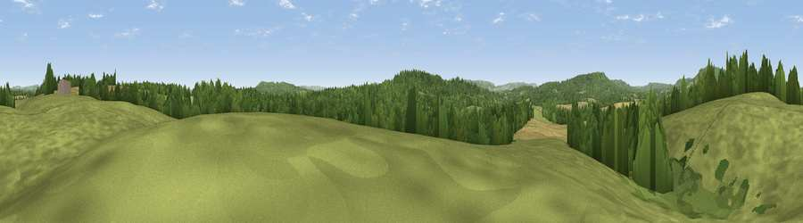

Viewpoint near Lurgashall
#28480 in England · top 46% of its area beats it · near LurgashallWhere it is
The exact computed spot (SU 95675 25125). Click the marker for map links.
The view, rendered

A 360° render of this exact spot computed from the terrain model, tree cover and land cover — summer colours, afternoon light, calibrated against photographs of famous viewpoints. Real trees, hedges and buildings will differ in detail.
The panorama
Grey silhouette: terrain skyline in each direction (720 bearings, Earth curvature and refraction included). Dashed green: skyline with trees (+15 m) and buildings (+8 m) as obstacles. Blue strip: how far the ground is visible on each bearing.
Where the view opens
Wedge length = distance to the farthest visible ground on that bearing (vegetation-aware). Rings at 10, 25 and 50 km.
What fills the view
57% grassland · 32% woodland · 11% cropland
Angular shares of the visible panorama (visual magnitude), not map area. Landscape diversity 0.41 (0–1 Shannon).
Key numbers
More beautiful places nearby
The staircase of upgrades: each row has a higher view potential than everything closer. Driving times are estimates from straight-line distance, calibrated against real road routing — check an actual route before setting out.
| Place | Direction | Drive | Score |
|---|---|---|---|
| Viewpoint near Tillington | S · 2 km | ~4 min | 58.2 |
| Viewpoint near Lodsworth | SSW · 2 km | ~6 min | 58.6 |
| Viewpoint near Lodsworth | W · 4 km | ~9 min | 61.2 |
| Viewpoint near Lodsworth | W · 4 km | ~10 min | 65.1 |
| Viewpoint near Fernhurst | NW · 6 km | ~12 min | 75.1 |
| Barlavington Down | S · 10 km | ~19 min | 77.3 |
| Viewpoint near Cocking | SW · 11 km | ~21 min | 77.6 |
| Viewpoint near Cocking | SW · 11 km | ~21 min | 78.3 |
51.01755, -0.63739 · source: screening · position refined by local search. Computed location — check access rights before visiting.